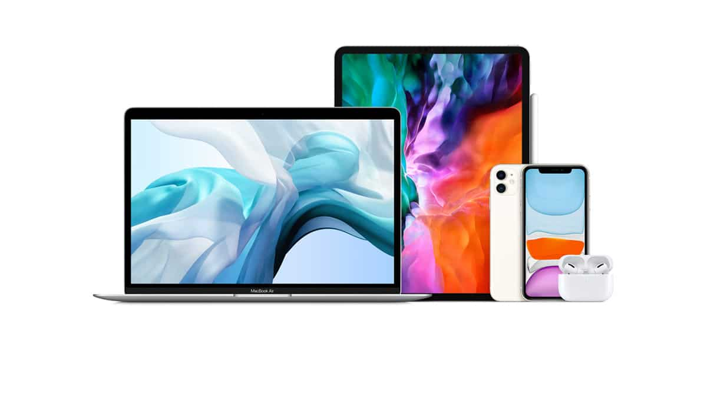
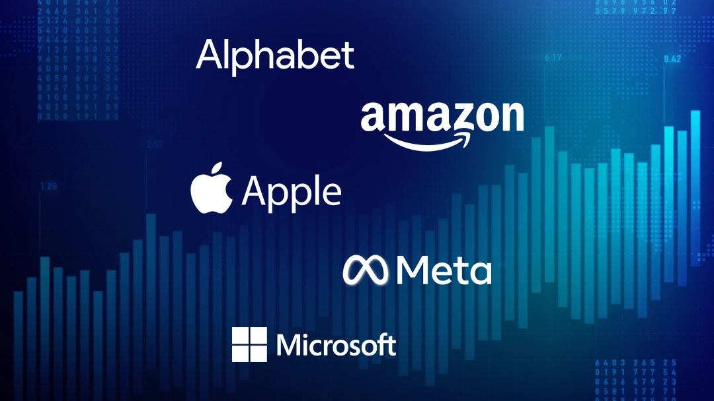

A apple e uma das maiores empresas de tecnologia do planeta. fundada no dia 1º de abril de 1976 por Steve Wozniak, Steve Jobs e Ronald Wayne a fim de começar a produzir e vender seu primeiro produto: o computador Apple I, criado por Wozniak. Originalmente chamada de Apple Computer Company, passou a ser Apple Computer Inc. a partir de 1977. No mesmo ano, começou a vender o Apple II, que rapidamente se tornou sucesso de vendas e um dos primeiros microcomputadores com produção em grande escala.

A Apple vende uma linha premium de eletrônicos de consumo, software e serviços. Nossos principais produtos incluem iPhones, computadores Mac, tablets iPad, relógios Apple Watch, fones AirPods, Apple TV e acessórios. Nós também comercializamos serviços como Apple Music, iCloud, Apple Arcade e Apple TV+
Estamos comprometidos em demonstrar que os negócios podem e devem ser uma força para o bem. Para alcançar esse objetivo, precisamos de inovação, colaboração e foco em servir aos outros. Significa também liderar com base em nossos valores na tecnologia que criamos, na maneira como a criamos e em como tratamos as pessoas e o planeta que compartilhamos. Trabalhamos sempre para deixar o mundo melhor do que o encontramos e para criar ferramentas poderosas que capacitem outros a fazer o mesmo.
